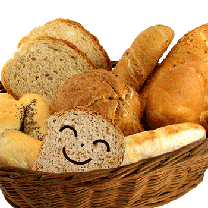

Alimento básico que se elabora con una mezcla de harina, generalmente de trigo, agua, sal y levadura, que se amasa y se cuece en un horno en piezas de distintas formas y tamaños; su sabor, color y textura pueden variar según el tipo de harina empleado y los ingredientes secundarios añadidos, como leche, mantequilla, frutos secos, etc.
Trucos para elaborar panes caseros
1. Ingredientes
Los ingredientes son el alma del pan. Tenemos que elegir muy bien todos los componentes de nuestro pan para que sea gustoso y crujiente. Una buena harina de panadería nos salvará de cualquier obstáculo.
2. Amasar, la clave de la mezcla
Es importante saber que la mejor manera de amasar es primero mezclar los ingredientes secos y después los húmedos. Primero se tiene que mezclar todos los ingredientes y, a continuación, dejar reposar la masa unos 10 minutos tapado con un paño. Después amasando haciendo pliegues sobre sí misma. Y si ves que estás cansado… ¡no dudes en pedir refuerzo!
3. Paciencia
Y paciencia… ahora es el turno de la fermentación. Se tiene que dejar reposar el pan; no sólo después de amasarlo, sino también después de darle forma y una fermentación final. Todo tiene su curso y cuando veamos que la masa haya duplicado su volumen, será la hora del horneado.
4. El truco final
Para terminar, a todos nos gusta un buen pan con esa crujiente corteza que cruje en la primera mordida, en la segunda, y en la tercera… Y es que el pan, necesita humedad. Así pues, con meter un vaso lleno de agua apto para el horno, habrá suficiente para que todo esto se haga realidad.
Ahora sí que estás listo para hacer un buen pan. Ya no tienes la excusa para no meter las manos en la masa y dedicar un poco de tiempo a hacer tu propio pan casero.